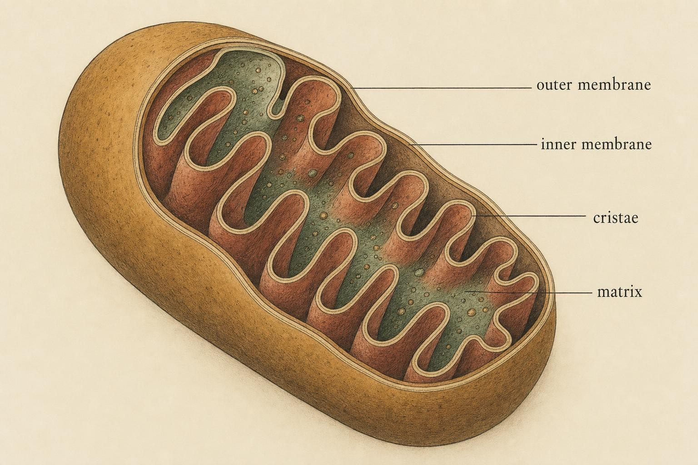
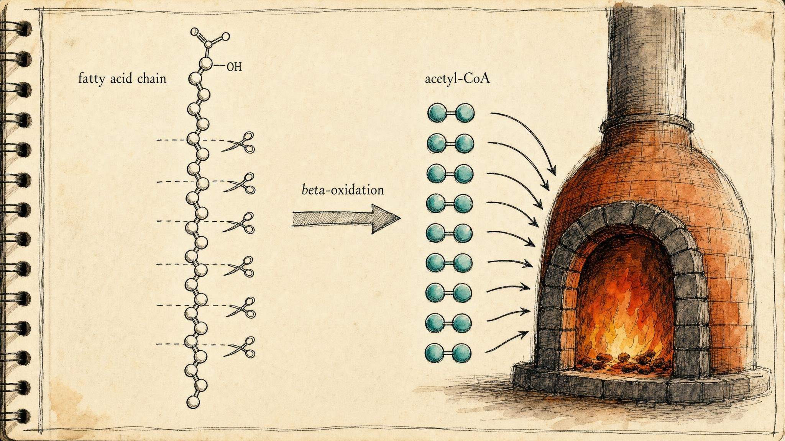

The Slow Furnace: Mitochondria, Oxygen, and Burning Fat
Meet the third resynthesis system, the one that never really stops.
Sit perfectly still and read this sentence. You feel like you are doing nothing, but inside every one of your cells a quiet chemical fire is burning. Right now, without any conscious effort, you are consuming oxygen, combining it with fuel drawn from your last meal and from fat you stored weeks ago, and rebuilding the energy currency that keeps your heart beating, your neurons firing, and your body warm. This is not a system you switch on for exercise. It is running as you sleep, and it will still be running long after the fast systems from the previous chapters have exhausted themselves.
In the last two chapters you met two ways of rebuilding adenosine triphosphate, the molecule your cells spend to do work. Both were fast, both were limited, and neither needed oxygen. Now we meet the largest system of all, the one that trades speed for a capacity so vast that, for practical purposes, it does not run out. This chapter goes further into mechanism than the last two, because the aerobic system is where most of the interesting chemistry of exercise physiology actually happens, and because understanding it precisely, not just its outline, is what lets you reason about fueling, fatigue, and training instead of memorizing rules of thumb.
A quick refresher before we go deeper
Every muscle contraction, every nerve impulse, every act of cellular housekeeping is paid for in the same currency: adenosine triphosphate, abbreviated ATP. When a cell spends ATP, the molecule loses one of its three phosphate groups and becomes adenosine diphosphate, abbreviated ADP. Your cells hold only a tiny amount of ATP at any instant, enough for perhaps a few seconds of hard work. So the real question of energy metabolism is never "how much ATP do you have," but "how fast can you rebuild it." That rebuilding is called resynthesis.
You have already met two resynthesis systems. The first, the phosphagen system, uses a stored molecule called phosphocreatine to regenerate ATP almost instantly, but it drains within roughly ten seconds of maximal effort. The second, the glycolytic system, breaks down carbohydrate rapidly without oxygen and can sustain hard effort for a minute or two, but it produces only a small amount of ATP per fuel molecule and accumulates a byproduct called lactate. Both systems are anaerobic, meaning they operate without oxygen. Both are sprinters. Neither can carry you through an afternoon.
The third system is different in kind. It is the oxidative system, also called the aerobic system because it requires oxygen (the prefix "aero" refers to air). It is slower to reach full output, but its capacity dwarfs the other two, and it is the only system that can burn fat. Understanding it is the hinge of this entire course, because once all three systems are on the table you can finally ask the central question: how does the body choose between fuels?
Inside the powerhouse
The aerobic system does its work in a specific structure inside your cells. A mitochondrion (plural: mitochondria) is a small compartment, or organelle, found inside nearly every cell in your body. It is often called the "powerhouse of the cell," a phrase you may have met in passing, and for once the nickname is earned. This is where fuel and oxygen are brought together to rebuild ATP in enormous quantities.
A mitochondrion has two membranes, an outer one and an inner one. The inner membrane is folded into deep ridges called cristae, which pack an enormous amount of surface area into a tiny volume. That surface area matters because it is studded with the molecular machinery that does the actual work of aerobic energy production. The space enclosed by the inner membrane is called the matrix, a fluid-filled compartment that holds its own set of enzymes and, as you will see shortly, is where the first major stage of aerobic fuel breakdown actually takes place. The more mitochondria a muscle contains, and the more cristae inside each one, the greater its aerobic capacity. This is not a fixed trait. It is one of the most trainable features of your entire physiology, a point we will return to shortly.

The folded inner membrane packs vast working surface into a microscopic volume." data-image-idx="0" style="display:block;max-width:100%;max-height:75vh;height:auto;width:auto;margin:0 auto;cursor:pointer;">Inside the mitochondrion, two connected processes handle most of the aerobic work. The first is a cycle of chemical reactions historically called the citric acid cycle, or the tricarboxylic acid cycle, abbreviated TCA cycle. You may also see it called the Krebs cycle after the scientist who mapped it. Whatever the name, its job is to take fuel fragments and strip high-energy electrons from them. The second process is the electron transport chain, a series of proteins embedded in the inner membrane that pass those electrons down a chain of reactions, releasing energy at each step. Together these two processes are the furnace itself. To see exactly why oxygen is required, and exactly why the aerobic system extracts so much more ATP than its anaerobic cousins, it helps to walk through each stage in turn rather than take the summary on faith.
The citric acid cycle, one turn at a time
Both carbohydrate and fat, once broken down far enough, arrive at the same doorway: a two-carbon fragment called acetyl coenzyme A, abbreviated acetyl-CoA, in which the two-carbon piece is attached to a larger carrier molecule called coenzyme A. Acetyl-CoA is the common currency that both carbohydrate and fat metabolism ultimately produce, and it is what actually enters the citric acid cycle. It does so by combining with a four-carbon molecule called oxaloacetate to form a six-carbon molecule called citrate, the same citric acid that gives the cycle its name. From there the cycle proceeds through a fixed sequence of enzyme-catalyzed steps, each one peeling off a little more of citrate's stored energy, until the six-carbon citrate has been whittled back down to four-carbon oxaloacetate, ready to accept another acetyl-CoA fragment and begin again. This is why it is called a cycle rather than a one-way pathway: the starting material is regenerated every time the wheel turns.
Over the course of one full turn, the cycle releases two molecules of carbon dioxide, the same carbon dioxide you exhale with every breath, accounting for essentially all of the carbon that ultimately leaves your body as a byproduct of fuel oxidation. More importantly for our purposes, the cycle strips high-energy electrons from its intermediates and loads them onto two kinds of electron carrier molecules. Three pairs of electrons are captured by a carrier called nicotinamide adenine dinucleotide, abbreviated NAD+, which becomes NADH once it accepts electrons and a hydrogen ion. One additional pair is captured by a carrier called flavin adenine dinucleotide, abbreviated FAD, which becomes FADH2 in its reduced, electron-carrying form. The cycle also directly generates one molecule of guanosine triphosphate, abbreviated GTP, a close chemical cousin of ATP that is readily interconverted with it, through substrate-level phosphorylation, the same direct, oxygen-independent mechanism you met in glycolysis. So a single turn of the citric acid cycle yields three NADH, one FADH2, and one GTP, alongside two molecules of carbon dioxide. Because each glucose molecule ultimately contributes two acetyl-CoA fragments, as the next section explains, one glucose drives the cycle around twice, doubling every one of these totals.
Pyruvate dehydrogenase: the gate from glycolysis to the furnace
It is worth naming explicitly a step this course has not yet spelled out, because it is the actual handoff between the glycolytic system of the previous chapter and the aerobic system of this one. Glycolysis, whether it ultimately feeds lactate production or the mitochondrion, always ends with the same molecule: pyruvate, a three-carbon compound. What happens to pyruvate next determines which system finishes the job. Under conditions where oxygen delivery cannot keep pace with demand, pyruvate is converted to lactate, which regenerates a small amount of NAD+ so glycolysis can keep running, as covered in the previous chapter. Under aerobic conditions, with oxygen available and demand within the furnace's reach, pyruvate instead crosses into the mitochondrial matrix and meets a large multi-enzyme machine called the pyruvate dehydrogenase complex, abbreviated PDH.
PDH performs an essentially irreversible reaction: it strips one carbon from pyruvate, releasing it as carbon dioxide, and attaches the remaining two-carbon fragment to coenzyme A, producing exactly the acetyl-CoA that feeds the citric acid cycle. Along the way it also loads one more NADH onto the carrier pool. Because this reaction cannot run in reverse, it functions as a one-way valve: once a carbohydrate-derived carbon skeleton has been committed to acetyl-CoA, it can no longer be converted back to glucose. Fat runs into the same dead end for a related reason. Beta-oxidation, described later in this chapter, also produces acetyl-CoA exclusively, and animal cells lack the enzymatic route needed to build the multi-carbon backbone of glucose back up from two-carbon fragments. This is a large part of why dietary fat cannot be converted into stored glycogen, while dietary carbohydrate can readily be converted into stored fat.
PDH is also a major control point, tightly regulated by the very products it makes. High levels of acetyl-CoA and NADH, the signals that the furnace already has plenty of fuel fragments queued up, inhibit PDH activity through a dedicated kinase enzyme, throttling the intake valve. Rising calcium ion concentration and rising ADP, both signals of active muscle contraction and energy demand, activate PDH through a companion phosphatase enzyme, opening the valve. This push and pull means the rate at which carbohydrate enters the aerobic furnace is matched, moment to moment, to how urgently the cell needs ATP and how much fuel is already in the pipeline (Hargreaves & Spriet, 2020).
There is an older and equally important reason to care about PDH regulation, first described by the physiologist Philip Randle and colleagues and known as the glucose fatty-acid cycle, or simply the Randle cycle. When fatty acid oxidation is running briskly, the acetyl-CoA and NADH it generates spill over and inhibit PDH, effectively directing the cell to lean on fat and spare carbohydrate. When carbohydrate delivery is high instead, the balance tips the other way. This reciprocal relationship remains one of the clearest windows we have into how the body decides, on a minute-by-minute basis, which fuel to burn, a question the next chapter takes up directly (Randle, Garland, Hales, & Newsholme, 1963).
The electron transport chain: four complexes and a spinning motor
With NADH and FADH2 now carrying their cargo of high-energy electrons, the next stage is the electron transport chain, a series of four large protein complexes, numbered Complex I through Complex IV, embedded in the folded inner mitochondrial membrane you met earlier. NADH delivers its electrons to Complex I, while FADH2 delivers its electrons slightly further along the chain, at Complex II. Complex II is, in fact, the very same enzyme, succinate dehydrogenase, that carries out one of the reactions of the citric acid cycle, making it the one point where the cycle and the chain are physically the same protein. This entry-point difference is meaningful: because FADH2 hands off its electrons at a lower-energy point in the chain than NADH does, it drives less proton pumping overall, and, as the next section shows, it therefore yields somewhat less ATP per molecule.
From Complexes I and II, electrons pass to a small, mobile, lipid-soluble carrier called ubiquinone, or coenzyme Q, which ferries them to Complex III. Complex III passes them to another small mobile carrier, a protein called cytochrome c, which ferries them the final leg to Complex IV. At each of Complexes I, III, and IV, the energy released as electrons drop to a lower energy state is used to pump hydrogen ions, also called protons, out of the mitochondrial matrix and across the inner membrane into the narrow space between the inner and outer membranes. This pumping is the entire point of the chain: it converts the chemical energy carried by the electrons into a physical gradient of protons stacked up on one side of the membrane.
Complex IV is where oxygen finally enters the story directly, and only there. It is the single point in the entire chain that reacts with oxygen, taking the electrons that have traveled all the way from NADH or FADH2, combining them with oxygen and with hydrogen ions, and producing water. This is the complete, literal answer to where the oxygen you breathe actually goes: not into your muscles to be "burned" like fuel the way wood burns in air, but into this one final reaction at Complex IV, where it quietly accepts spent electrons so the rest of the chain does not back up. Without oxygen waiting at the end of the line, electrons would have nowhere to unload, Complexes I through IV would clog like a chain of blocked pipes, proton pumping would stop, and, as the next paragraph shows, ATP production by this route would stop with it.
The protons pumped into the intermembrane space do not simply sit there. They are drawn back toward the matrix by both an electrical charge difference and a concentration difference across the membrane, together called the proton motive force. The only practical path back through the otherwise impermeable inner membrane runs through a remarkable enzyme called ATP synthase, sometimes labeled Complex V even though it is not part of the electron transport chain itself. ATP synthase is built like a tiny rotary motor: protons flowing through one part of the enzyme spin a central shaft, and that spinning drives conformational changes in an attached head that mechanically forces ADP and inorganic phosphate together into ATP. It is one of the few known rotating mechanical motors in biology, and a single mitochondrion can contain thousands of these motors spinning simultaneously.
Chemiosmosis: Peter Mitchell's radical idea
The overall coupling of electron transport to ATP production through a proton gradient is called chemiosmosis, and it was one of the most contested ideas in twentieth-century biochemistry before it became one of the most celebrated. The British biochemist Peter Mitchell proposed the chemiosmotic hypothesis in 1961, arguing that the energy released by electron transport was stored not in some undiscovered high-energy chemical intermediate, as most of the field then assumed, but in an electrochemical gradient of protons across a membrane (Mitchell, 1961). The idea met considerable skepticism for more than a decade, since it required biochemists to picture energy storage in a fundamentally more physical way than the chemistry they were used to. Accumulating evidence eventually proved Mitchell right, and he received the Nobel Prize in Chemistry in 1978 for the discovery.
The practical upshot of chemiosmosis is that ATP production by the aerobic system is not one chemical reaction but a two-stage process: first build a proton gradient, then spend the gradient through ATP synthase. This separation has an interesting consequence. If the inner mitochondrial membrane is made leaky to protons, letting them trickle back into the matrix without passing through ATP synthase, the gradient dissipates as heat instead of ATP. The body uses exactly this mechanism on purpose in a specialized tissue called brown adipose tissue, where a protein called uncoupling protein 1, abbreviated UCP1, deliberately short-circuits the gradient to generate warmth rather than ATP, a process important for temperature regulation in infants and in hibernating animals. It is a useful reminder that the aerobic system's output, ATP versus heat, is itself somewhat adjustable, not fixed by chemistry alone (Alberts et al., 2015).
Why aerobic yields so much more ATP
Recall that glycolysis, working anaerobically, nets only about two molecules of ATP for each molecule of glucose it breaks down. That is a poor return, which is exactly why the glycolytic system burns through fuel so quickly under hard effort. The oxidative system, by contrast, takes the products of that same glucose molecule all the way through the TCA cycle and the electron transport chain, extracting a total of roughly thirty to thirty-two molecules of ATP per glucose (Alberts et al., 2015; Hargreaves & Spriet, 2020). The exact figure depends on accounting assumptions explained below, but the order of magnitude is not in question: aerobic metabolism extracts something on the order of fifteen times more ATP from the same glucose molecule than anaerobic glycolysis alone.
The reason is efficiency of extraction. Anaerobic glycolysis grabs a quick, small payoff and leaves most of the chemical energy locked inside its products. The aerobic system finishes the job, disassembling fuel fragments completely down to carbon dioxide and water and harvesting nearly all of the available energy along the way. It is the difference between skimming the top off a barrel and draining it fully.
Counting the ATP: why the number is "about" thirty, not a fixed thirty-six
Older textbooks, and quite possibly one your own instructor learned from, often state that a single glucose molecule yields thirty-six or thirty-eight ATP when fully oxidized. That older figure assumed a fixed, whole-number ratio of ATP produced per pair of electrons delivered to the chain, namely three ATP for every NADH and two ATP for every FADH2. More precise measurements of the actual proton-pumping stoichiometry of the electron transport chain complexes, together with a fuller accounting of costs the older estimate ignored, have revised the consensus figure down to roughly thirty to thirty-two ATP per glucose (Alberts et al., 2015; Hargreaves & Spriet, 2020). Nothing about the underlying biology changed between the two estimates. Only the precision of the accounting did.
The accounting is worth working through explicitly, so the number stops feeling like something to memorize and starts feeling like something you can derive. Glycolysis, occurring in the cytosol outside the mitochondrion, nets two ATP directly through substrate-level phosphorylation and produces two NADH. The pyruvate dehydrogenase step, converting the two pyruvate molecules from one glucose into two acetyl-CoA, produces two more NADH. Two full turns of the citric acid cycle, one for each acetyl-CoA, produce six NADH, two FADH2, and two GTP, which we count as two more ATP. Add it up and one glucose molecule generates ten NADH, two FADH2, and four ATP through direct substrate-level phosphorylation, before the electron transport chain has done anything at all.
Modern measurements put the yield at approximately two and a half ATP per NADH oxidized through the electron transport chain, and approximately one and a half ATP per FADH2, reflecting the fact that FADH2 enters the chain at Complex II, downstream of the first proton-pumping site, and therefore drives less pumping. Ten NADH at two and a half ATP each contributes twenty-five ATP. Two FADH2 at one and a half ATP each contributes three ATP. Added to the four ATP already produced by substrate-level phosphorylation, the running total reaches thirty-two ATP.
One further wrinkle trims the number for many cells. The two NADH produced by glycolysis are made in the cytosol, but NADH itself cannot cross the inner mitochondrial membrane directly. It has to be ferried in by one of two shuttle systems. The malate-aspartate shuttle, used heavily by heart and liver tissue, delivers the electrons in a form equivalent to mitochondrial NADH, preserving the full two and a half ATP per pair. The glycerol-3-phosphate shuttle, more prominent in skeletal muscle and brain, instead delivers the electrons to FADH2 within the chain, at a cost of one full ATP per pair, since FADH2 yields only one and a half ATP rather than two and a half. Depending on which shuttle a given tissue relies on, the final total lands somewhere between thirty and thirty-two ATP per glucose. This is exactly why the figure is reported slightly differently from one source to the next, and why "about thirty" is a more honest answer than any single fixed integer, whether that integer is thirty, thirty-two, or the outdated thirty-six.
None of this changes the essential comparison to anaerobic glycolysis, which nets only two ATP per glucose with no shuttle costs to worry about, since it never touches the mitochondrion at all. Whether the true aerobic figure is thirty or thirty-two, it remains roughly fifteen times the anaerobic yield, extracted from the exact same starting molecule.
Play with the dashboard above and one pattern emerges again and again. As you move from left to right, from explosive to all-day effort, the system that dominates changes, and a clean trade-off appears: the systems with the highest maximum rate have the smallest capacity, and the system with the largest capacity has the lowest rate. The phosphagen system is a drag racer, the glycolytic system a middle-distance specialist, and the oxidative system a marathoner that could, given fuel and water, essentially go all day (Hargreaves & Spriet, 2020). Keep this power-versus-capacity trade-off in mind, because it is the single idea this whole chapter keeps circling back to, and it is the direct answer to the question posed in the callout above: a sprinter cannot "just run everything aerobically" because the aerobic system's maximum rate of ATP delivery per second is simply too low to meet the ATP demand of an all-out sprint, no matter how much fuel sits in reserve.
The fuel that only the aerobic system can burn
So far we have talked about the aerobic system burning glucose, the carbohydrate fuel that the anaerobic systems also use. But here is what makes the oxidative system genuinely special: it can also burn fat, and fat is by far the largest energy store your body holds. The anaerobic systems cannot touch fat at all. Only the aerobic pathway, with its oxygen and its mitochondria, can unlock it.
To understand how, we need one new term. Body fat is stored as molecules called triglycerides, each of which is three long chains called fatty acids attached to a small backbone. Most triglyceride is stored in adipose tissue, the specialized fat-storing tissue distributed under the skin and around organs, but a smaller and metabolically important pool is also stored directly inside muscle fibers themselves, close to the mitochondria that will eventually use it, as tiny droplets called intramuscular triglyceride. A fatty acid is essentially a long chain of carbon atoms, and that chain is where the energy is. But a long fatty acid chain cannot enter the TCA cycle directly. It has to be chopped into small, usable pieces first.
That chopping process is called beta-oxidation. The name comes from the fact that the reactions attack the fatty acid chain at a specific carbon (the "beta" carbon) and, in a repeating cycle, snip off two carbon fragments at a time. Each snip produces a two-carbon molecule called acetyl-CoA, exactly the fragment the TCA cycle is waiting to receive, as described earlier in this chapter. Picture a baker breaking a long baguette into bite-sized pieces so the furnace can accept them one at a time. Beta-oxidation is that breaking, and it repeats along the whole chain until the entire fatty acid has been reduced to a stack of acetyl-CoA fragments (Jeppesen & Kiens, 2012).

Beta-oxidation snips a long fatty acid into two-carbon fragments the furnace can accept." data-image-idx="1" style="display:block;max-width:100%;max-height:75vh;height:auto;width:auto;margin:0 auto;cursor:pointer;">Inside one turn of beta-oxidation
The one-sentence description above, chopping a fatty acid two carbons at a time, is accurate but skips the mechanism, and the mechanism is worth seeing because it explains both the products beta-oxidation generates and why they slot so neatly into everything covered so far. Before a fatty acid can be broken down at all, it must first be activated, a reaction that attaches coenzyme A to the fatty acid's end, consuming the equivalent of two high-energy phosphate bonds from ATP and converting that ATP all the way down to adenosine monophosphate, abbreviated AMP, plus two inorganic phosphate-containing byproducts. This upfront cost matters for the final tally worked out below.
Once activated and shuttled into the mitochondrial matrix by the carnitine system described next, the fatty acid chain, now called a fatty acyl-CoA, undergoes a repeating cycle of exactly four enzyme-catalyzed steps. First, an enzyme called acyl-CoA dehydrogenase removes two hydrogen atoms from the chain, forming a double bond and loading the hydrogens onto FAD to make FADH2. Second, an enzyme called enoyl-CoA hydratase adds a water molecule across that new double bond. Third, an enzyme called 3-hydroxyacyl-CoA dehydrogenase removes two more hydrogen atoms, this time loading them onto NAD+ to make NADH. Fourth and finally, an enzyme called thiolase cleaves the chain between the second and third carbons from the end, releasing one two-carbon acetyl-CoA fragment and leaving behind a fatty acyl-CoA that is exactly two carbons shorter than before. That shortened chain then re-enters the cycle at step one, and the whole four-step sequence repeats.
Consider palmitate, a common sixteen-carbon fatty acid and the same molecule referenced in the widget below. Sixteen carbons broken two at a time into acetyl-CoA requires seven full turns of the cycle to yield eight total acetyl-CoA fragments, since the final turn releases two acetyl-CoA at once rather than one. Those seven turns generate seven FADH2 and seven NADH along the way, in addition to the eight acetyl-CoA fragments, each of which then enters the citric acid cycle exactly as described earlier in this chapter.
The carnitine shuttle: fat's turnstile
Getting fatty acids into the mitochondrion in the first place is itself a controlled step, not a passive one, and this is worth dwelling on because it is one of the central reasons fat cannot power fast exercise. Long-chain fatty acid-CoA molecules cannot cross the inner mitochondrial membrane on their own. Instead they are handed off to a small carrier molecule called carnitine by an enzyme called carnitine palmitoyltransferase one, abbreviated CPT1, which sits on the outer face of the inner membrane. The fatty acid-carnitine complex is shuttled across by a translocase protein and handed to a second enzyme, carnitine palmitoyltransferase two, abbreviated CPT2, on the inner face, which reattaches coenzyme A and releases carnitine to be recycled back across the membrane for another round. Every one of those steps takes time and depends on enzyme abundance and activity, both adjustable by training but neither able to be sped up instantly on demand the way glycolytic enzymes can. This shuttle, more than any single other factor, is the rate-limiting bottleneck on how many fatty acid molecules can reach the furnace per second (Jeppesen & Kiens, 2012; Fritzen, Wojtaszewski, & Kiens, 2018).
Once acetyl-CoA fragments from fat enter the TCA cycle, they are treated exactly like acetyl-CoA fragments from carbohydrate. The cycle strips their electrons, the electron transport chain pumps its ions, oxygen accepts the spent electrons at the end, and ATP synthase spins. The furnace does not care whether its fuel arrived as fat or as carbohydrate. It only cares that the fragments and the oxygen keep coming.
Run the furnace on fat with oxygen present and the ATP counter climbs to a value that makes the anaerobic systems look almost trivial. Walking through the arithmetic makes that number concrete rather than abstract. Palmitate's eight acetyl-CoA fragments each drive a full turn of the citric acid cycle, and at roughly ten ATP generated per acetyl-CoA processed through the cycle and electron transport chain together (three NADH at two and a half ATP each, one FADH2 at one and a half ATP, and one GTP, summing to about ten), eight fragments contribute roughly eighty ATP on their own. The seven FADH2 generated directly by beta-oxidation add roughly ten or eleven more, at one and a half ATP apiece, and the seven NADH from beta-oxidation add roughly seventeen or eighteen more, at two and a half ATP apiece. Summing all of it, and then subtracting the small upfront activation cost of two ATP equivalents described earlier, brings the total to approximately one hundred six ATP from a single palmitate molecule, compared with the two net ATP from anaerobic glycolysis of one glucose molecule. Cut off the oxygen, though, and the whole cascade halts at Complex IV, because without a final electron acceptor the chain cannot run, full stop. That single constraint, a place for the last electron to go, is the entire difference between aerobic and anaerobic energy.
The near-bottomless tank
Now for the number that reframes how you think about your own body. Consider a person weighing seventy-five kilograms with fifteen percent body fat, a fairly lean build. That person carries carbohydrate stored as glycogen in the liver and muscles totaling fewer than three thousand kilocalories of usable energy. Meanwhile, that same person's fat stores hold more than one hundred thousand kilocalories (Gonzalez et al., 2016). The fat tank is more than thirty times larger than the carbohydrate tank, and this ratio holds even in a genuinely lean individual.
Sit with that comparison. Carbohydrate is the small, quick-access tank, enough to power roughly ninety minutes to two hours of hard endurance effort before it runs low. Fat is the vast reserve tank that could, in principle, fuel many days of moderate activity. Every extra minute you can spend drawing on fat is a minute you are not draining the small and precious carbohydrate supply. This is exactly why endurance athletes care so much about fat oxidation: it is a strategy for protecting the limited fuel, not merely for the sake of burning fat itself.
But if fat is so plentiful, why can you not simply burn it fast enough to sprint? Here we meet the bottleneck again. Getting fatty acids out of storage, transported in the blood, shuttled across the mitochondrial membrane by CPT1 and CPT2, and chopped by beta-oxidation is a multi-step process with a limited maximum rate. Fat delivers a huge amount of ATP, but slowly. During high-intensity exercise, fat oxidation is actually suppressed, not because the fat has run out, but because the delivery and processing machinery simply cannot keep pace with the ATP demand, and because the rapid rate of carbohydrate breakdown chemically limits how much fat-derived acetyl-CoA can enter the cycle (Jeppesen & Kiens, 2012; Fritzen et al., 2018). Fat is the enormous slow-flowing reservoir; carbohydrate is the smaller tank with a wide-open valve.
Three afternoons in the life of the furnace
Numbers on a page are easier to trust once you can picture them running inside an actual body doing an actual activity. Consider three afternoons.
First, an afternoon of sitting and reading. At rest, oxygen consumption hovers around three and a half milliliters of oxygen per kilogram of body mass per minute, a value physiologists use as a reference unit called one metabolic equivalent, abbreviated one MET. Nearly all of that resting energy comes from the aerobic system, and in a fasted, resting state the fuel mixture leans heavily toward fat, often supplying somewhere around half to two-thirds of the calories burned, with the remainder coming from carbohydrate. This is the furnace at idle: barely ticking over, almost entirely aerobic, and content to sip from the enormous fat reservoir because there is no urgency and plenty of time for the slow delivery chain, blood flow, the carnitine shuttle, beta-oxidation, to keep pace with the modest demand.
Second, an afternoon spent on a steady, conversational jog, something like sixty to seventy percent of an individual's maximal oxygen uptake, abbreviated VO2max, the ceiling on how much oxygen the body can take in and use per minute. At this intensity, oxygen consumption might run ten to fifteen times the resting value. The fuel mixture shifts to include considerably more carbohydrate than at rest, but fat oxidation is often at or near its own absolute peak rate here, a zone exercise scientists sometimes call "fat max," typically occurring somewhere in the range of forty-five to sixty-five percent of VO2max (Achten & Jeukendrup, 2004). Push harder than this and, counterintuitively, the absolute rate of fat oxidation starts to fall even as total energy expenditure keeps climbing, because carbohydrate delivery and glycolytic flux ramp up fast enough to begin crowding out the slower fat-processing machinery, partly through the same Randle cycle dynamics discussed earlier, running in reverse. This crossover from fat-dominant to carbohydrate-dominant fuel use as intensity rises is well documented and is often called the crossover concept (Brooks & Mercier, 1994).
Third, an afternoon on a long, gentle hike, four hours at a pace easy enough to hold a conversation the whole way. This is the scenario that shows the aerobic system's capacity advantage most vividly. At a low enough intensity, the body can lean heavily on fat oxidation for hours on end, because demand never outpaces what the slow delivery chain can supply. A hiker's limited glycogen stores, worth roughly fifteen hundred to two thousand kilocalories in muscle plus several hundred more in the liver, would be exhausted well before the halfway point if carbohydrate alone had to cover the entire four hours. Because fat can be recruited steadily at low intensity, glycogen is spared, doled out gradually rather than drained early, which is precisely why "bonking," the abrupt, severe fatigue that follows glycogen depletion, is rare on an easy hike and common in a race run too fast for too long. The hike is not more efficient than the jog in some abstract sense. It simply asks less of the furnace per second, which lets the furnace draw from the tank that never seems to run out.
Notice what stays constant across all three afternoons: the machinery is identical, the same mitochondria, the same citric acid cycle, the same electron transport chain, the same beta-oxidation pathway. What changes is only the pace at which the machinery is asked to run, and which fuel is best positioned to keep up with that pace.
Where the lactate went
In the previous chapter you met lactate, the byproduct of rapid glycolysis, and you may have absorbed the old story that lactate is a waste product that causes fatigue and muscle soreness. Set that story aside. It is one of the most thoroughly overturned myths in exercise physiology. Lactate is not a dead end; it is a fuel, and the aerobic system is precisely where much of it gets burned.
The reframing comes largely from the work summarized in lactate shuttle theory (Brooks, 2018). Lactate produced in one place, for example a fast-twitch muscle fiber working hard, is transported to another place better equipped to use it: a nearby oxidative muscle fiber, the heart, the liver, or even the brain. There, oxygen-rich mitochondria take the lactate, convert it back toward a usable fuel fragment, and oxidize it for ATP. Lactate is, in Brooks's framing, the crucial link between the glycolytic and aerobic pathways, continuously produced and continuously consumed even when you are fully aerobic and feeling fine.
Mechanistically, lactate's re-entry into the aerobic system runs through the very doorway described earlier in this chapter. An enzyme called lactate dehydrogenase converts lactate back into pyruvate inside the receiving cell, and from there pyruvate proceeds exactly as already described: across the mitochondrial membrane, through the pyruvate dehydrogenase gate, into acetyl-CoA, and into the citric acid cycle. Lactate is not a separate fuel requiring its own dedicated machinery. It is simply pyruvate wearing a different hat while it travels between cells.
And to clear the record completely: lactate does not cause the muscle soreness you feel a day or two after unfamiliar exercise. Blood lactate returns to baseline within roughly an hour of stopping, long before soreness peaks. That delayed soreness comes from mechanical micro-damage and the inflammatory repair that follows, not from any lingering acid. When someone tells you lactic acid is making them sore, they are repeating a century-old error.
A trainable system, and a few honest corrections
What exactly grows when a muscle "gets more aerobic" with training? Several concrete, measurable things. The number and size of individual mitochondria increase, packing more electron transport chain machinery into the same volume of muscle. The density of capillaries, the smallest blood vessels, surrounding each muscle fiber increases, shortening the diffusion distance that oxygen and fuel must travel from blood to mitochondrion. The concentration of myoglobin, an oxygen-binding protein inside muscle fibers that acts as a short-term local oxygen reservoir and eases its diffusion, rises as well. Upstream of all of this, a regulatory protein called peroxisome proliferator-activated receptor gamma coactivator 1-alpha, abbreviated PGC-1alpha, acts as a master switch, activated by the repeated stress of endurance exercise and orchestrating the coordinated construction of new mitochondrial components. None of these adaptations happen after a single workout; they accumulate over weeks to months of consistent training, which is why aerobic fitness builds and fades on a timescale of months, not days.
In their seminal review, Holloszy and Coyle (1984) showed that regular endurance exercise increases both the number of mitochondria and their respiratory capacity in skeletal muscle. A trained muscle, working at the same absolute intensity as it did before training, uses its glycogen more slowly, relies more on fat, and produces less lactate. You are not merely getting a bigger engine; you are getting an engine that sips the scarce fuel and leans on the plentiful one. More recent work confirms that both endurance training and dietary fat exposure drive convergent adaptations in the proteins that handle fatty acid uptake, mitochondrial import, and beta-oxidation, coordinated by regulatory signals with names like AMP-activated protein kinase, abbreviated AMPK, and the peroxisome proliferator-activated receptors, abbreviated PPARs (Fritzen, Lundsgaard, & Kiens, 2020).
Two myths deserve direct correction while we are here. The first is the idea that the "afterburn," the modest elevation in metabolism after exercise, is a major driver of fat loss. It is real but small, and it does not rewrite the overall energy balance in the way popular claims suggest. The second is "starvation mode," the notion that eating too little makes the body cling to fat by shutting metabolism down to near nothing. Energy expenditure does adjust modestly with reduced intake, but the body does not defy the arithmetic of energy balance. Both myths survive because they contain a grain of truth wrapped in exaggeration.
Finally, a word of caution. Persistent, unexplained fatigue, unusual cold intolerance, or difficulty with normal activity can sometimes signal a metabolic or thyroid condition rather than simple deconditioning. This chapter is education about how the healthy system works, not a diagnostic tool. If something about your own energy feels genuinely wrong, that warrants evaluation by a qualified professional, not a training adjustment.
The capacity of muscle to generate ATP aerobically is not fixed. It is among the most adaptable properties of the human body, remade by the demands you place on it.
Paraphrased from Holloszy & Coyle (1984)
Key Takeaways
- The oxidative, or aerobic, system rebuilds ATP inside mitochondria and requires oxygen, which serves as the final acceptor for spent electrons at Complex IV, the last stage of the electron transport chain.
- Pyruvate dehydrogenase is the irreversible gate that commits carbohydrate-derived pyruvate to acetyl-CoA, and it is regulated in tandem with fat oxidation through the glucose fatty-acid, or Randle, cycle.
- Chemiosmosis, proposed by Peter Mitchell in 1961, couples electron transport to ATP production through a proton gradient across the inner mitochondrial membrane, a gradient spent by the rotating enzyme ATP synthase.
- Aerobic metabolism extracts roughly thirty to thirty-two ATP per glucose molecule, about fifteen times more than anaerobic glycolysis, because it disassembles fuel completely rather than skimming a quick partial yield.
- The precise ATP figure is an approximation, not a fixed constant, because it depends on the ATP cost per NADH and FADH2 and on which shuttle system ferries cytosolic NADH into the mitochondrion.
- Beta-oxidation chops long fatty acid chains into two-carbon acetyl-CoA fragments through a repeating four-step cycle, allowing the aerobic system alone to burn fat, a fuel the anaerobic systems cannot use.
- Fat stores exceed one hundred thousand kilocalories even in a lean person, over thirty times the carbohydrate reserve, but fat is delivered slowly through the carnitine shuttle bottleneck, so it powers low and moderate intensity, not sprints.
- Lactate is a fuel, not a waste product; it re-enters aerobic metabolism through the same pyruvate dehydrogenase gate as carbohydrate, and it does not cause delayed muscle soreness.
- The aerobic system trades speed for capacity, and endurance training expands that capacity by building more mitochondria, more capillaries, and more myoglobin, and by shifting fuel use toward fat.
You now have all three resynthesis systems on the table: the instant phosphagen system, the fast glycolytic system, and the vast oxidative system. In the next chapter we tackle the question the whole course has been building toward: how does the body actually choose between carbohydrate and fat, and why do the three systems overlap and blend rather than switching cleanly on and off? The answer is more graceful, and more interesting, than any single switch.
References
Achten, J., & Jeukendrup, A. E. (2004). Optimizing fat oxidation through exercise and diet. Nutrition, 20(7-8), 716-727. https://doi.org/10.1016/j.nut.2004.04.005
Alberts, B., Johnson, A., Lewis, J., Morgan, D., Raff, M., Roberts, K., & Walter, P. (2015). The mitochondrion (Chapter 14). In Molecular biology of the cell (6th ed.). Garland Science. https://www.ncbi.nlm.nih.gov/books/NBK26894/
Brooks, G. A. (2018). The science and translation of lactate shuttle theory. Cell Metabolism, 27(4), 757-785. https://doi.org/10.1016/j.cmet.2018.03.008
Brooks, G. A., & Mercier, J. (1994). Balance of carbohydrate and lipid utilization during exercise: the "crossover" concept. Journal of Applied Physiology, 76(6), 2253-2261. https://doi.org/10.1152/jappl.1994.76.6.2253
Fritzen, A. M., Lundsgaard, A. M., & Kiens, B. (2020). Tuning fatty acid oxidation in skeletal muscle with dietary fat and exercise. Nature Reviews Endocrinology, 16(12), 683-696. https://doi.org/10.1038/s41574-020-0405-1
Fritzen, A. M., Wojtaszewski, J. F. P., & Kiens, B. (2018). Molecular regulation of fatty acid oxidation in skeletal muscle during aerobic exercise. Trends in Endocrinology & Metabolism, 29(5), 322-336. https://pubmed.ncbi.nlm.nih.gov/29221849/
Gonzalez, J. T., Fuchs, C. J., Betts, J. A., & van Loon, L. J. C. (2016). Liver glycogen metabolism during and after prolonged endurance-type exercise. American Journal of Physiology-Endocrinology and Metabolism, 311(3), E543-E553. https://doi.org/10.1152/ajpendo.00232.2016
Hargreaves, M., & Spriet, L. L. (2020). Skeletal muscle energy metabolism during exercise. Nature Metabolism, 2(9), 817-828. https://doi.org/10.1038/s42255-020-0251-4
Holloszy, J. O., & Coyle, E. F. (1984). Adaptations of skeletal muscle to endurance exercise and their metabolic consequences. Journal of Applied Physiology, 56(4), 831-838. https://doi.org/10.1152/jappl.1984.56.4.831
Jeppesen, J., & Kiens, B. (2012). Regulation and limitations to fatty acid oxidation during exercise. The Journal of Physiology, 590(5), 1059-1068. https://physoc.onlinelibrary.wiley.com/doi/abs/10.1113/jphysiol.2011.225011
Mitchell, P. (1961). Coupling of phosphorylation to electron and hydrogen transfer by a chemi-osmotic type of mechanism. Nature, 191(4784), 144-148. https://doi.org/10.1038/191144a0
Randle, P. J., Garland, P. B., Hales, C. N., & Newsholme, E. A. (1963). The glucose fatty-acid cycle. Its role in insulin sensitivity and the metabolic disturbances of diabetes mellitus. The Lancet, 281(7285), 785-789. https://doi.org/10.1016/S0140-6736(63)91500-9